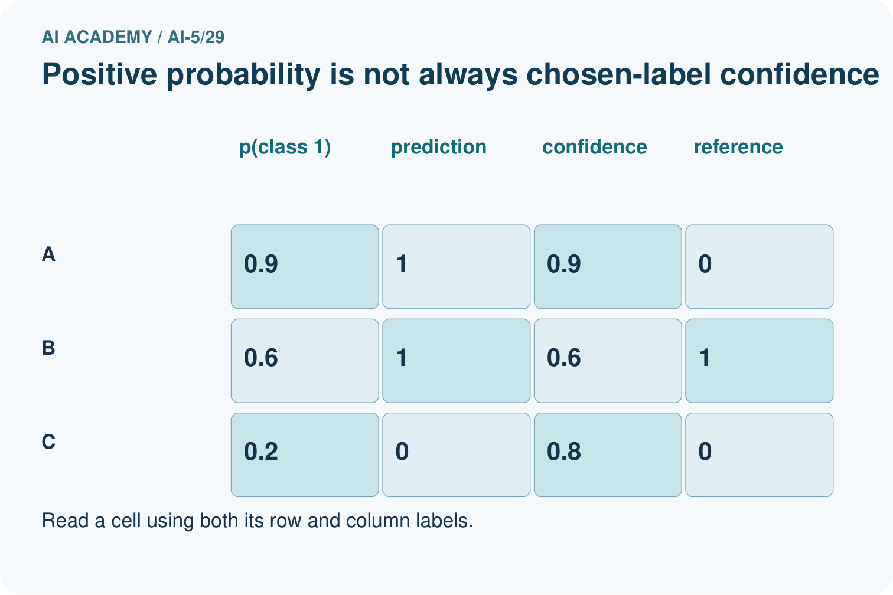
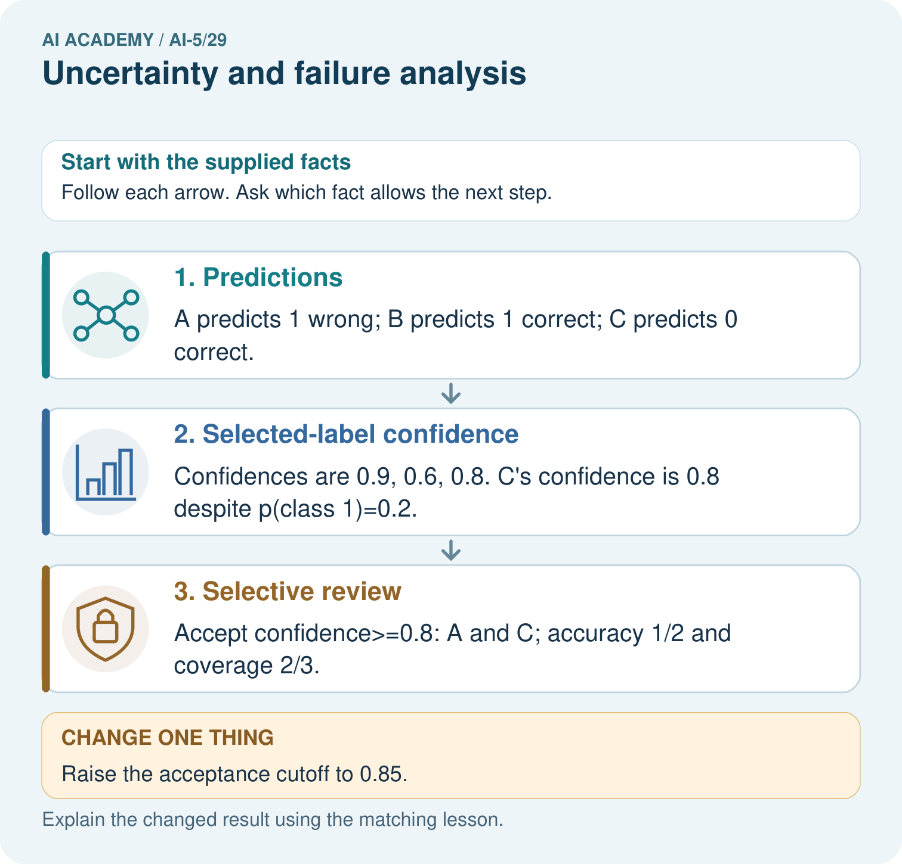
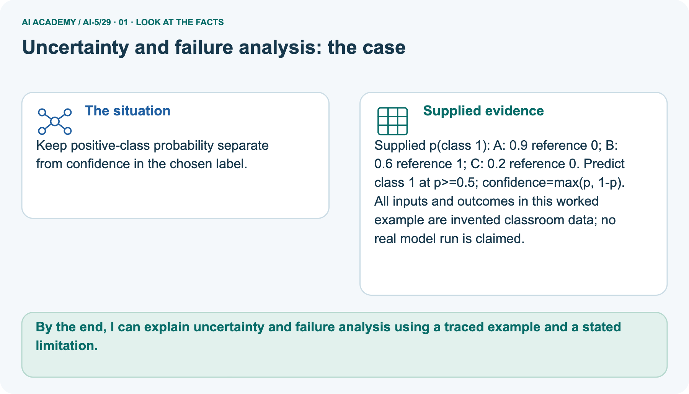
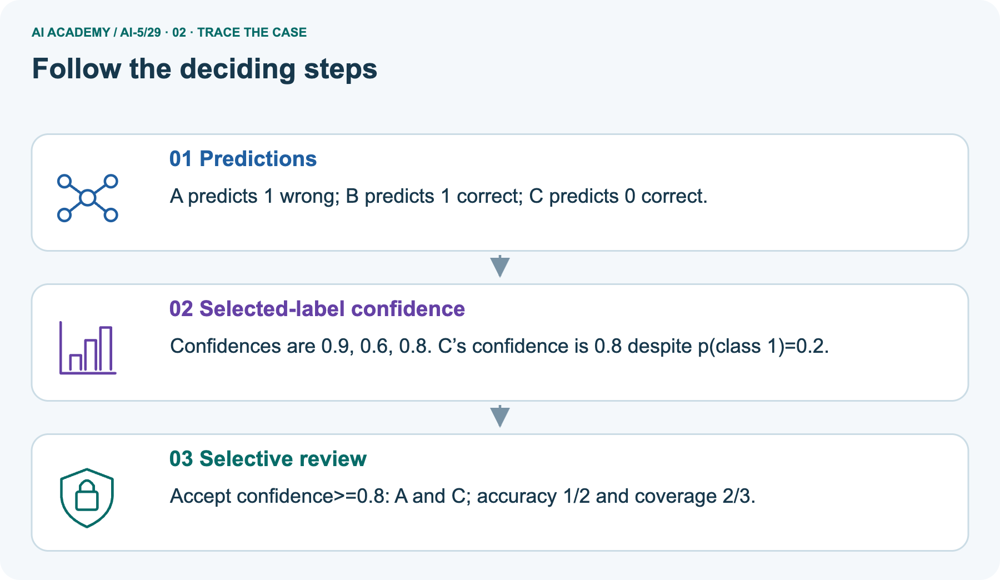
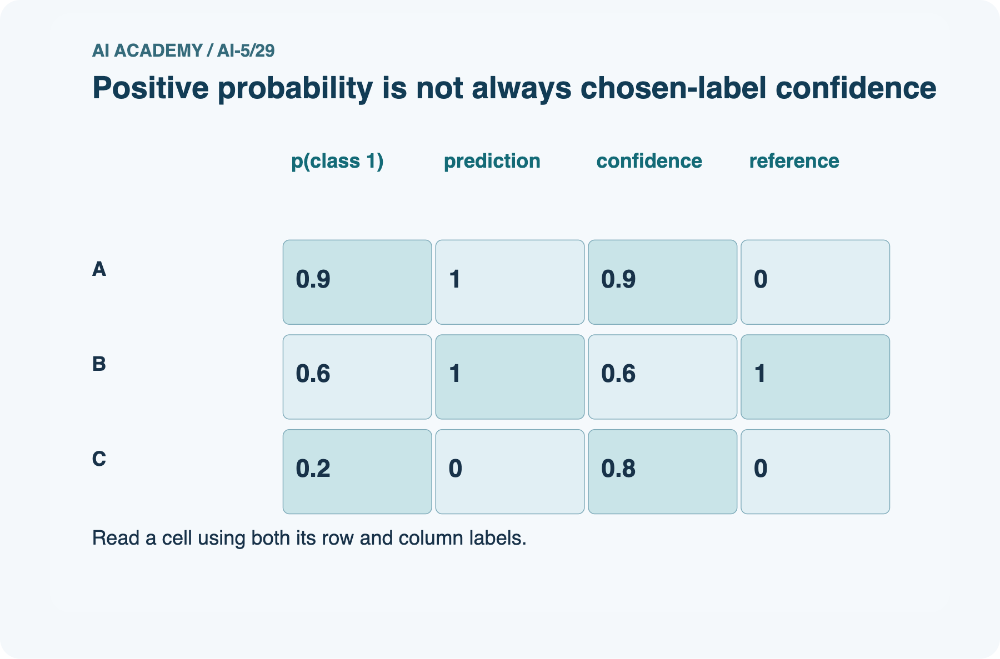
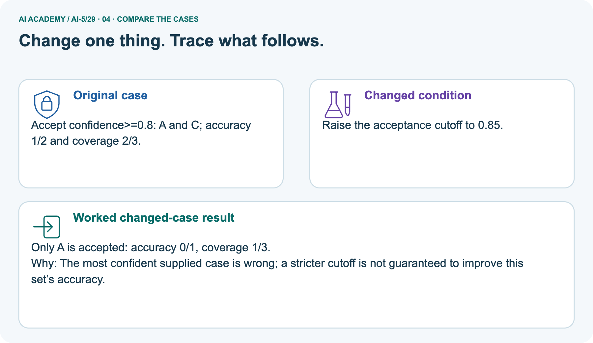

AI Academy · Level 5 · Grade 10 · Week 29 · Workbook
Uncertainty and failure analysis
Learn to understand, design, build, test and explain AI systems responsibly.
Project: Image-pattern Network Investigation
Workbook · 1 of 15
Recall and choose your starting point
Record your starting explanation for Uncertainty and failure analysis before opening notes. Show any later correction separately.
Try the recall before opening notes. Then use a different colour or a labelled second line to correct your explanation.
Transfer learning
Without opening the old lesson, explain one key idea from Transfer learning. Give an example and a mistake that the idea helps you avoid.
Embeddings and neighbourhoods
Without opening the old lesson, explain one key idea from Embeddings and neighbourhoods. Give an example and a mistake that the idea helps you avoid.
Training a small image model
Without opening the old lesson, explain one key idea from Training a small image model. Give an example and a mistake that the idea helps you avoid.
Workbook · 2 of 15
Practise with fading help
Complete the supported Uncertainty and failure analysis trace and record the first step you can explain without help.
Use W2: Count both types of error for Uncertainty and failure analysis. Record the answer once; the lesson and workbook refer to the same attempt.
| Given inputs | Procedure I chose | Middle steps | Result and check |
|---|---|---|---|
Workbook · 3 of 15
Individual reasoning check
Check the proposed Uncertainty and failure analysis explanation against the supplied facts before discussing it.
Use the worked case for Uncertainty and failure analysis. Proposed explanation: “A low p1 always means low confidence”. Decide whether this explanation is supported.
Point to the step or supplied fact that decides; explain your repair if needed.
Workbook · 4 of 15
Independent transfer case
Write one first attempt at the reserved independent case before feedback. Repeated copies of that case refer to the same recorded attempt.
Independent case: Analyse new outputs independently
Four new cases have (p1, reference label): K (0.85, 0), L (0.70, 1), M (0.30, 0), N (0.05, 0). Give predictions and confidences, overall accuracy, and accepted cases at cutoff 0.80.
Calculate coverage and accepted-case accuracy. Does this policy improve accuracy on the accepted subset here?
Attempt this case before feedback. Record any help. Earlier examples below are further practice; a case already practised with feedback cannot establish fresh transfer.
Workbook · 5 of 15
W1 Separate confidence from correctness
Separate confidence from correctness. Apply the supplied Uncertainty and failure analysis facts and keep your reasoning.
For B, E and F, give the predicted class, selected-class confidence and correctness. Explain why p1 = 0.10 does not mean F has low confidence in its predicted class.
Workbook · 6 of 15
W2 Count both types of error
Count both types of error. Apply the supplied Uncertainty and failure analysis facts and keep your reasoning.
For all six cases, list false positives and false negatives, count true positives and true negatives, and calculate overall accuracy. Why might a single accuracy hide useful information?
Workbook · 7 of 15
W3 Audit the review policy
Audit the review policy. Apply the supplied Uncertainty and failure analysis facts and keep your reasoning.
At cutoff 0.80, list accepted and deferred cases, coverage and accepted-case accuracy. Can you calculate final accuracy after human review from the supplied data?
What does the report function return for accepted-case accuracy at cutoff 0.99?
Workbook · 8 of 15
W4 Analyse new outputs independently
Attempt before feedback. If this repeats the selected independent case, reuse that first attempt; otherwise keep a separate record. Analyse new outputs independently. Apply the supplied Uncertainty and failure analysis facts and keep your reasoning.
Four new cases have (p1, reference label): K (0.85, 0), L (0.70, 1), M (0.30, 0), N (0.05, 0). Give predictions and confidences, overall accuracy, and accepted cases at cutoff 0.80.
Calculate coverage and accepted-case accuracy. Does this policy improve accuracy on the accepted subset here?
Workbook · 9 of 15
W5 Design a failure investigation
Design a failure investigation. Apply the supplied Uncertainty and failure analysis facts and keep your reasoning.
All three blurred cases are wrong. A team claims blur caused the errors and plans to put clear images in training and their blurred copies in final evaluation.
Identify the unsupported claim and the split problem; propose a better investigation.
Workbook · 10 of 15
Project checkpoint and reflection
Connect Uncertainty and failure analysis to Image-pattern Network Investigation, identify a limit and choose the next useful test.
Add a labelled uncertainty and failure analysis evidence sheet to Image-pattern Network Investigation. Show how you can distinguish a predicted class, confidence score and observed correctness.
Use the supplied fictional case and keep its inputs, intermediate steps, calculation or prediction, and limitation. Connect this record to last week’s record; a matching answer without a trace is insufficient.
Workbook · 11 of 15
Feedback, return check and learning record
Record the first repaired step and a different case to revisit after a delay.
| Evidence | My record |
|---|---|
| Worked alone / hint / model | |
| First step I repaired and why | |
| New case checked later; date and result | |
| What I can now explain without notes | |
| One remaining question |
Revisit this idea with your teacher after a delay. Familiarity is different from explaining and using it on a changed case.
Workbook · 12 of 15
Pictorial case practice: Uncertainty and failure analysis
Keep positive-class probability separate from confidence in the chosen label. Explain the labelled step before checking the changed condition.
Keep positive-class probability separate from confidence in the chosen label.
Supplied p(class 1): A: 0.9 reference 0; B: 0.6 reference 1; C: 0.2 reference 0. Predict class 1 at p>=0.5; confidence=max(p, 1-p).
All inputs and outcomes in this worked example are invented classroom data; no real model run is claimed.


What is C’s positive-class probability and chosen-label confidence? Point to the relevant step in the picture, then write the changed result and the rule or evidence that supports it.
Record the help used
Support used: alone / hint / worked example. This record is practice evidence.
Project connection: For your Image-pattern Network Investigation, save the input, procedure, observed result and limitation of this check.
Label this worked example as practice; use a different, previously unreviewed case when checking independent understanding.
Workbook · 13 of 15
Project portfolio milestone
Keep this week’s input, deciding step, result and limit together in the Image-pattern Network Investigation record.
Project: Image-pattern Network Investigation
Current milestone: Prepare the demonstration. Gather reproducible instructions, evidence, access checks and remaining limitations.
For your Image-pattern Network Investigation, save the input, procedure, observed result and limitation of this check.
Label this worked example as practice; use a different, previously unreviewed case when checking independent understanding.
| Evidence to keep | My record |
|---|---|
| This week’s input and deciding step | |
| Prediction and actual result (or labelled paper trace) | |
| One change since the previous checkpoint and why | |
| One error or limit and the next test |
Workbook · 14 of 15
Supported practice and learning evidence
Try the supported questions before comparing with hints and feedback. Record what you repaired and the evidence you retained.
Use this supported practice once, in the browser or on paper. Keep the reserved independent assessment for a separate first attempt before teacher feedback.
Keep positive-class probability separate from confidence in the chosen label.
Practice 1: explain the deciding evidence
Which labelled step matches this detail? Accept confidence>=0.8: A and C; accuracy 1/2 and coverage 2/3.
1. Selected-label confidence
2. Selective review
3. Predictions
Hint · try first
Hint if needed: Read the steps in the pictorial case. Match the supplied detail to the stage that performs or records it.
Feedback · compare after trying
After your attempt, compare with the supported explanation: Selective review Accept confidence>=0.8: A and C; accuracy 1/2 and coverage 2/3.
Positive-class probability and confidence in the chosen label differ when the predicted class is zero. For C, a class-one probability of 0.2 gives class-zero confidence 0.8 under this toy rule.
Selective accuracy counts only accepted cases; coverage counts how many were accepted. A stricter cutoff can retain a confidently wrong case and lower accuracy on this supplied set.
Practice 2: explain the deciding evidence
Changed case · predict first
Changed-case practice: Raise the acceptance cutoff to 0.85. Which conclusion is supported by the supplied facts?
1. This one example guarantees correct results for every future input.
2. We can decide the result without examining the changed input or the procedure.
3. Only A is accepted: accuracy 0/1, coverage 1/3.
Hint · try first
Hint if needed: Use the changed condition and the deciding step in the pictorial trace. The answer must say what follows from those facts.
Feedback · compare after trying
After your attempt, compare with the supported explanation: Only A is accepted: accuracy 0/1, coverage 1/3. The most confident supplied case is wrong; a stricter cutoff is not guaranteed to improve this set’s accuracy.
Repair a missing building block
Review Transfer learning (ai-5/28). Goal: Trace a reused feature extractor and a newly fitted output head. Short practice: Which part was trained for the new task?
Point to the relevant step in the picture, then write the changed result and the rule or evidence that supports it.. Return to this week and explain what you changed.
Review Embeddings and neighbourhoods (ai-5/26). Goal: Look up a vector using a token ID and preserve sequence shape. Short practice: What would justify claiming nearby vectors mean related topics?
Point to the relevant step in the picture, then write the changed result and the rule or evidence that supports it.. Return to this week and explain what you changed.
Review Training a small image model (ai-5/23). Goal: Trace a complete image model with fixed features and one trained weight. Short practice: Does lower training loss alone establish that four updates generalise better?
Point to the relevant step in the picture, then write the changed result and the rule or evidence that supports it.. Return to this week and explain what you changed.
Predict, run and debug
The browser lab lets you edit the supported Python examples already included in this lesson. Predict first, run, inspect the actual output or error, change one input, then run again.
Keep code, predictions, actual results and a reasoned revision together. On paper, label your result as a trace rather than an execution.
Keep your completed work
Use Download completed work in the hosted lesson to export your answers, reflections, practice feedback and code-run evidence. Open the HTML copy to read or print it.
Drafts stay in this browser when storage is available; clear drafts on a shared device.
Workbook · 15 of 15
Visual concept journey
Explain each Uncertainty and failure analysis picture from its labels, then record a relevant limit.
01. Uncertainty and failure analysis: the case

Keep positive-class probability separate from confidence in the chosen label. Supplied facts: Supplied p(class 1): A: 0.9 reference 0; B: 0.6 reference 1; C: 0.2 reference 0. Predict class 1 at p>=0.5; confidence=max(p, 1-p).
All inputs and outcomes in this worked example are invented classroom data; no real model run is claimed.
Point to the given fact that matters most. Explain why it matters.
02. Follow the deciding steps

Predictions: A predicts 1 wrong; B predicts 1 correct; C predicts 0 correct. → Selected-label confidence: Confidences are 0.9, 0.6, 0.8.
C’s confidence is 0.8 despite p(class 1)=0.2. → Selective review: Accept confidence>=0.8: A and C; accuracy 1/2 and coverage 2/3.
Point to each numbered stage and explain which recorded input it uses.
03. Positive probability is not always chosen-label confidence

Positive probability is not always chosen-label confidence. A: p(class 1) = 0.9, prediction = 1, confidence = 0.9, reference = 0. B: p(class 1) = 0.6, prediction = 1, confidence = 0.6, reference = 1.
C: p(class 1) = 0.2, prediction = 0, confidence = 0.8, reference = 0.
Read the labels and values. Explain the relationship the model shows.
04. Change one thing. Trace what follows.

Original case: Accept confidence>=0.8: A and C; accuracy 1/2 and coverage 2/3. Changed condition: Raise the acceptance cutoff to 0.85. Expected result: Only A is accepted: accuracy 0/1, coverage 1/3.
Reason: The most confident supplied case is wrong; a stricter cutoff is not guaranteed to improve this set’s accuracy.
Predict before checking the worked changed-case result. Name what changed and what the supplied facts allow you to conclude.
05. Connect the explanation to its limit
![Positive-class probability and confidence in the chosen label differ when the predicted class is zero. For C, a class-one probability of 0.2 gives class-zero confidence 0.8 under this toy rule. Selective accuracy counts only accepted cases; coverage counts how many were accepted. A stricter cutoff can retain a confidently wrong case and lower accuracy on this supplied set. Limit: Supplied scores are not proven calibrated. Review policies need representative held-out evidence and clear handling of rejected cases.](../assets/academy-story-ai-5-29-05.png)
Positive-class probability and confidence in the chosen label differ when the predicted class is zero. For C, a class-one probability of 0.2 gives class-zero confidence 0.8 under this toy rule.
Selective accuracy counts only accepted cases; coverage counts how many were accepted. A stricter cutoff can retain a confidently wrong case and lower accuracy on this supplied set.
Limit: Supplied scores are not proven calibrated. Review policies need representative held-out evidence and clear handling of rejected cases.
Explain the case, then point to a limit on the claim.
06. Make the idea visible in your project

For your Image-pattern Network Investigation, save the input, procedure, observed result and limitation of this check.
Label this worked example as practice; use a different, previously unreviewed case when checking independent understanding. Draw your input, deciding step, result and limit.
Supported question: What is C’s positive-class probability and chosen-label confidence? Point to the relevant step in the picture, then write the changed result and the rule or evidence that supports it.
Draw your project trace and justify the deciding step using evidence.